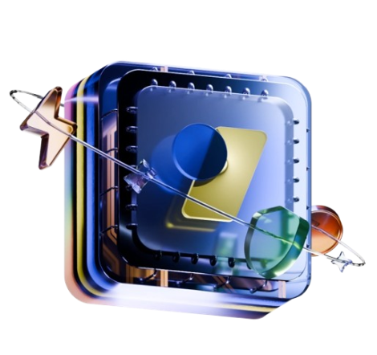
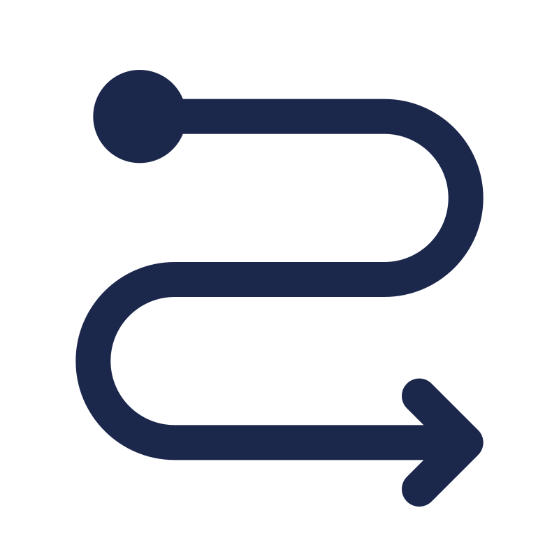
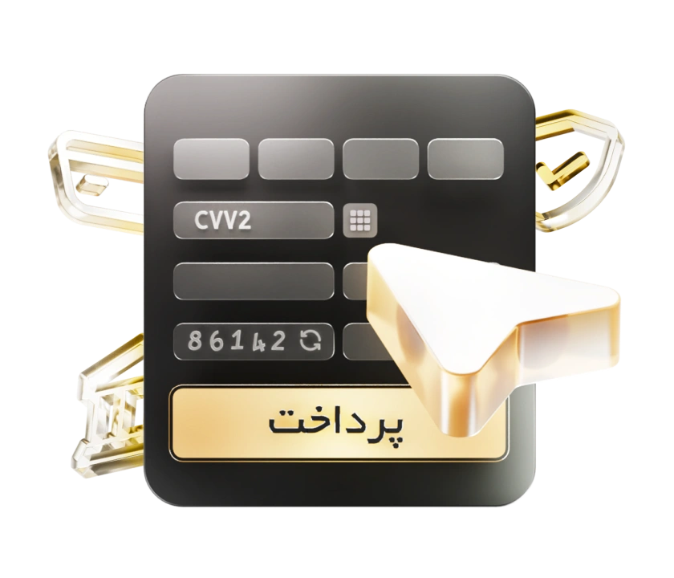

زرینپال، به عنوان اولین پرداختیار کشور، با بهکارگیری استانداردهای جدید در ارائه خدمات درگاه پرداخت اینترنتی، سرویسهای متنوعی در حوزهی پرداخت الکترونیک را برای کسب و کارها ارائه میکند.
درگاه پرداخت زرین پال،تجربه پرداخت اینترنتی آسان ،سریع و ایمن را به مشتریان کسب و کارهای آنلاین هدیه میدهد .

امکان اتصال به ۶ درگاه پرداخت معتبر، باعث میشود کاربران به بهترین درگاه پرداخت با بالاترین میزان تراکنش موفق هدایت شوند.
درگاه امن زرینپال، امنیت اطلاعات بانکی افراد در هنگام پرداختهای اینترنتی را تضمین میکند.
تیم پشتیبانی زرینپال به صورت ۲۴ ساعته در ۷ روز هفته، آمادهی پاسخگویی و راهنمایی کاربران است.
درگاه پرداخت اینترنتی IPG
درگاه پرداخت زرینپال، با اتصال همزمان به درگاههای متنوع و معتبر بانکی (PSPها)، کاربران را به سریعترین و مطمئنترین درگاه بانکی منتقل میکند و به واسطهی قابلیت مسیردهی هوشمند، باعث افزایش فروش و درصد تراکنشهای موفق میشود.


توسعه دهندگان
زرینپال با کمک افزونهها و نمونه کدهای آماده درگاه پرداخت زرینپال، دردسرهای افزودن به سایت و نیاز به کدنویسی را به حداقل رسانده است.
نظر کاربران درباره زرین پال
بازتاب تجربه پذیرندگان از خدمات زرینپال
سهولت فرایند پرداخت در زرینپال این امکان را میدهد
تا کاربر با کمترین کلیک و حس خوب، خرید خود را نهایی
کند.
تسویه حساب منظم، پشتیبانی اختصاصی و بروزرسانی
به موقع از ویژگیهای کار با زرینپال است.
گزارش گیری عالی، امکان پیگیری تراکنشها، تسویه
حساب سریع و تفکیک درآمدها کار را بسیار آسان کرده
است.
پشتیبانی قوی، امنیت و حس شهرت زرینپال، یکی از
دلایل همکاری با زرینپال است و کاربران با اطمینان
کامل از امنیت درگاه و بدون چون و چرا و خیالی آسوده
خرید خود را به راحتی انجام میدهند.
از همان ابتدای شروع به کار جابینجا تاکنون، سرویس
خوب زرینپال تبدیل به یکی از بخشهای کسب و کار
ما شده است. ارائهی ابزارهای گزارشگیری عالی، پشتیبانی
منحصر به فرد و پیشرو بودن در خلق تجربهی خرید
آسان، زرینپال را
تبدیل به راهکار اصلی ما برای پرداخت
آنلاین کرده است.
زرینپال نه فقط بخاطر کاربرد درگاه پرداخت، بخاطر
داشتن تیم قوی و فراهم کردن زیرساخت بسیار کاربردی،
بهترین گزینه برای انتخاب به عنوان درگاه پرداخت
میباشد.

سوالات متداول
۱. به صفحهی زرینپال من بروید.
۲. نام، نام خانوادگی و شمارهی همراه خود را وارد نمایید.
۳. کد پیامک شده را در بخش مربوطه وارد کنید.
۴. پس از ورود به پنل مدیریتی خود در زرینپال، نسبت به تکمیل اطلاعات
اقدام نمایید.
۱. پس از ورود به حساب کاربری خود در زرینپال، روی آیکونِ پیشخوان
کلیک کنید.
۲. سپس گزینهی درخواست درگاه پرداخت را انتخاب نمایید.
۳. در پنجرهی «افزودن درگاه پرداخت»، آدرس وبسایت خود را وارد
کنید.
۴. عنوان وبسایت، شماره تماس پشتیبانی و دستهبندی حوزهی فعالیت خود
را مشخص کنید.
۵. حساب بانکی موردنظرتان را جهت تسویهحساب وارد کنید.
پس از کسر کارمزد هنگام هر تراکنش، مبلغ پرداختی حداکثر یک روز پس از انجام تراکنش و تا ساعت ۱۱ صبح، به حساب شخص واریز شده و تسویهحساب انجام میشود. لازم به توضیح است که تسویهحساب در روزهای تعطیل رسمی، انجام نمیشود.
به دو روش «ارسال تیکت» و «تماس تلفنی» میتوانید با کارشناسان امور
مشتریان زرینپال در ارتباط باشید. از منوی
سمت راست پیشخوان خود، روی گزینهی تیکتها کلیک کنید. در صورتیکه
پاسخ سوال خود را
در «گزینههای دیگر» پیدا نکردید، با انتخاب گزینهی تیکت جدید، پرسش
خود را مطرح کنید. حداکثر زمان پاسخگویی به تیکتها، ۱۲ ساعت است،
چنانچه در این بازه پیامی دریافت نکردید، با کارشناسان امور
مشتریان زرینپال، با شماره تلفن ۰۲۱۴۵۶۲۸۰۰۰ تماس بگیرید.

یک ماه رایگان ، هدیه ی زرین پال به شما